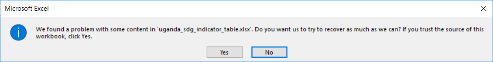
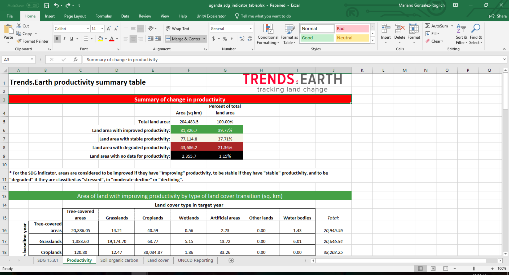

Interpréter le tableau récapitulatif¶
Objectif: Apprenez à ouvrir et à interpréter les tableaux récapitulatifs produits par Trends.Earth lors du calcul de la couche finale SDG 15.3.1.
Temps d’achèvement estimé: 25 minutes
Accès Internet: Non requis
Note
Vous aurez besoin d’avoir précédemment calculé SDG 15.3.1 en utilisant l’outil Calculer la couche finale SDG 15.3.1 et la table récapitulative pour la limite totale. Reportez-vous à la section Calculer l’indicateur SDG pour des instructions sur la façon d’exécuter l’analyse.
Lorsque vous avez calculé SDG 15.3.1, un fichier Excel a été créé avec la table récapitulative. Accédez à ce dossier et double-cliquez sur le fichier pour l’ouvrir.

Si vous utilisez Microsoft Excel, les messages d’erreur suivants peuvent s’afficher. Cliquez sur Oui sur le premier et sur OK sur le second. Nous travaillons actuellement en essayant d’identifier d’où vient l’erreur, mais le fichier est entièrement fonctionnel.
Si vous utilisez LibreOffice ou OpenOffice, le fichier se chargera sans erreur.
Le fichier du tableau récapitulatif contient 5 onglets, que vous pouvez explorer en cliquant sur chacun des différents noms au bas de l’écran: ODD 15.3.1, Productivité, Carbone organique du sol, Couverture terrestre et Rapport UNCCD.
Dans l’onglet SDG 15.3.1, vous trouverez les calculs de surface dérivés de la carte des indicateurs que vous avez explorée dans QGIS.
Pour la zone où vous effectuez l’analyse, vous verrez la superficie totale (à l’exclusion des masses d’eau): terres qui ont connu une amélioration, qui sont restées stables, zones dégradées, ainsi que les informations sur les zones sans données pour la période sélectionnée. Aucune donnée dans l’ODD 15.3.1 n’est une indication de l’absence de données dans certains ensembles de données d’entrée utilisés dans l’analyse.
Dans l’onglet Productivité, vous trouverez en haut un résumé similaire à celui expliqué précédemment, mais dans ce cas, il représente uniquement les résultats du sous-indicateur de la productivité des terres.
Dans les sections ci-dessous, vous trouverez deux tableaux, chacun contenant des informations sur la superficie (en kilomètres carrés) pour chacune des transitions de couverture terrestre trouvées dans l’étude pendant la période analysée par chacune des 5 classes finales de productivité: Augmentation, Stable , Stable mais stressé, signes précoces de déclin, et déclin.
Dans l’onglet Carbone organique du sol, vous trouverez en haut, un résumé similaire à celui expliqué précédemment, mais dans ce cas représentant les résultats du sous-indicateur carbone organique du sol seul.
Dans les sections ci-dessous, vous trouverez deux tableaux:
Le premier contient des informations sur les changements dans les stocks de carbone de la base (première année d’analyse) à la cible (dernière année d’analyse).
La seconde présente l’évolution du carbone organique du sol entre le niveau de référence et la cible par type de transition de la couverture terrestre (en pourcentage du stock initial).
Dans l’onglet Land cover, vous trouverez en haut un résumé similaire à celui expliqué précédemment, mais dans ce cas, il représente uniquement les résultats du sous-indicateur de changement de la couverture terrestre.
Dans les sections ci-dessous, vous trouverez deux tableaux:
Le premier contient des informations sur le changement de la couverture du sol par classe de couverture (sq, km et%).
La seconde contient des informations sur la superficie des terres par type de transition de la couverture terrestre (km2).
Dans l’onglet UNCCD Reporting, vous trouverez cinq tableaux contenant des informations similaires à celles présentées dans les onglets précédents, mais dans ce cas spécifiquement formatés pour correspondre au modèle de rapport requis par la UNCCD. Chaque tableau indique en haut le numéro de page et la section du modèle auquel l’information se réfère.